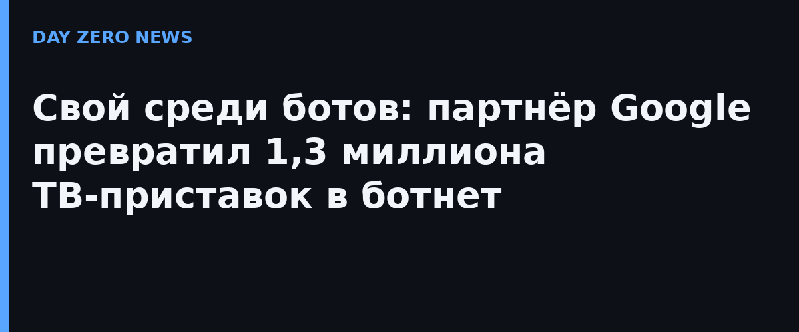

Google Threat Intelligence Group 2 ноября отчитался о ликвидации бэкдора x.cpe (пакет com.oemservice), который был вшит прямо в прошивки Android-приставок с заводскими системными привилегиями. Обычное удаление пакета не помогало: после перезагрузки вредонос восстанавливался из раздела /oem/. По оценке Google с высокой уверенностью, бэкдор «намеренно разработан, развёрнут и эксплуатировался ради наживы» компанией Videostrong Technology — китайским OEM/ODM-производителем, который годами ставил его на разные модели устройств, обходя сертификационные тесты Google с помощью обфускации и загрузки кода после первой загрузки устройства.
Архитектура была трёхступенчатой: управление шло по лёгкому протоколу MQTT (сервер mqtt.szbboys[.]com на портах 3885–3887), а исполнение отделялось отдельным загрузчиком com.abc.nexus — это затрудняло обнаружение. Заражённые устройства становились выходными точками резидентных прокси-сетей, генерировали накрутку рекламных показов и догружали следующий вредонос. Операторы могли молча устанавливать приложения, выполнять shell-команды, снимать экран и выкачивать учётные данные; вредонос умел отключать проверку Google Play Protect. Среди жертв были не только приставки: встречались телемедицинское оборудование, караоке-машины и цифровые вывески.
Google разорвал отношения с Videostrong и запретил ей и её будущим дочерним структурам выпускать сертифицированные Android-устройства и поставлять софт сертифицированным вендорам. В операции участвовали Национальное полицейское управление Японии, Lumen, HUMAN Security, Plume, Synthient и TrendAI; судейские действия по серверам управления и доменам аффилиатов, по оценке Google, перекроют доступ ещё минимум к 10 миллионам скомпрометированных устройств — это отдельная цифра, не входящая в 1,3 миллиона XCPE. Компания также признала дыру в собственной системе проверки устройств и объявила об изменениях в процессе ревью и усилении проверок целостности прошивок.
Самое тревожное здесь даже не масштаб, а источник угрозы: «поставщик безопасности» оказался продавцом доступа для преступников. Прошивка от брендированного OEM не гарантия чистоты — а сертификат Android не заменяет аудит. Покупателям устройств для дома и офиса Google советует выбирать проверенных производителей, а уроки прошлого кейса BadBox 2.0 (более 10 млн неверифицированных устройств) показывает: рынок дешёвых ТВ-боксов остаётся конвейером для ботнетов. Ликвидация инфраструктуры не означает, что каждое устройство теперь чисто — это лишь отсечение каналов управления.